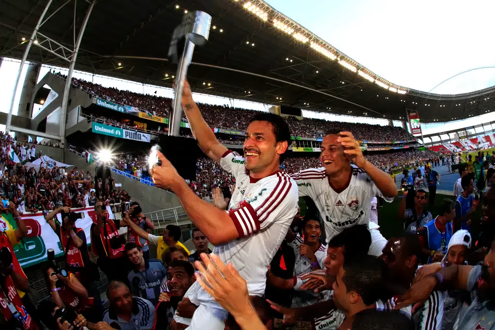
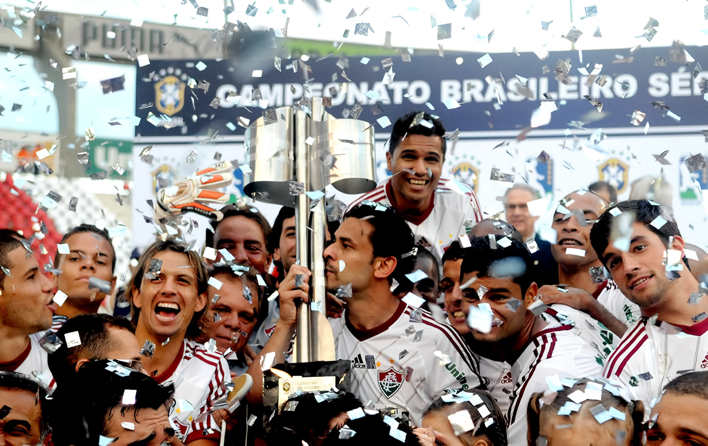

Fundado em 21 de julho de 1902, por Oscar Cox, jovem filho de um cidadão inglês
vice-cônsul da Inglaterra no Equador, o Fluminense Football Club levava, à época, as cores cinza e branco. Cox
é um dos grandes responsáveis pela chegada do futebol ao Brasil. Em diversas idas à "Terra da Rainha", sempre
trazia novidades, bolas, materiais esportivos. Também jogou e foi campeão Carioca de 1906, quando o Flu já era
verde, branco e grená. Com problemas para adquirir o tecido cinza para o uniforme original, em 1904 foi
aprovada a alteração, nascendo o Tricolor.
Pioneiro, o Fluminense construiu o primeiro estádio de cimento da América Latina, o Estádio de Laranjeiras,
que foi sede do Campeonato Sul-Americano de Seleções (atual Copa América) e dos Jogos Olímpicos
Latino-Americanos (atualmente Jogos Pan-Americanos). Foi também palco do primeiro título relevante da Seleção
Brasileira.
Considerada o "Prêmio Nobel do Esporte", o Fluminense é o único clube da América Latina que detém a Taça
Olímpica, conquistada em 1949, além de ser o único clube de futebol do mundo a ter seu nome inscrito na
honraria concedida pelo Comitê Olímpico Internacional por serviços prestados ao esporte.
Foi de Preguinho, um dos ídolos tricolores, o primeiro gol da Seleção Brasileira em Copas do Mundo. Desde Cox,
muitos craques vestiram a camisa do Fluminense. Além de Preguinho, nomes como Pinheiro, Hércules, Escurinho,
Waldo, Orlando Pingo de Ouro, Welfare, Ademir de Menezes, Rivellino, Altair, Jair Marinho, Gerson, Marcos
Carneiro de Mendonça, Félix, Castilho, Carlos Alberto Torres, PC Caju, Pintinho, Branco, Didi, Ézio, Romerito,
Assis, Washington, Renato Gaúcho, Telê Santana, Romário, Deco, Conca, entre outros, fizeram a alegria da
torcida tricolor.
O clube é campeão da Conmebol Libertadores 2023, campeão da Conmebol Recopa 2024, tetracampeão brasileiro
(1970, 1984, 2010 e 2012), campeão da Copa do Brasil (2007), campeão da Copa da Primeira Liga (2016) e 33
vezes campeão Estadual.
Além da sede de Laranjeiras e do Maracanã, onde manda seus jogos, o Fluminense possui dois Centros de
Treinamentos. O de Xerém, em Duque de Caxias, é voltado para as divisões de base
Era Maracanã
O Fluminense conquistaria o seu primeiro título no Maracanã ao se sagrar campeão
carioca de 1951, a primeira taça oficial levantada por um time que conquistaria uma grande glória no ano
seguinte. Em 1952, quando a população ainda lamentava a perda da Copa do Mundo de 1950, o Fluminense elevou a
autoestima do povo carioca, conquistando no Maracanã, de forma invicta, a Copa Rio de 1952, embrião da atual
Copa do Mundo de Clubes da FIFA. Com Castilho, Píndaro, Pinheiro, Bigode, Didi, Telê e Orlando Pingo de Ouro,
entre outros, tendo o exponencial Zezé Moreira no comando, o Tricolor passou por Sporting, Grasshopper,
Peñarol, Austria Viena e, ao vencer o Corinthians por 2-0 no primeiro jogo e segurando o empate por 2-2 ambos
no Maracanã, conquistou essa importante taça para o Brasil.
Em 1957 conquistaria o Torneio Rio-São Paulo, embrião do Campeonato Brasileiro, invicto, e em 1960 chegaria ao
segundo título, com apenas uma derrota, quando estes eram os campeonatos mais competitivos do Brasil. Além da
inacabada edição de 1940, chegaria a última rodada precisando apenas de uma vitória para ser campeão, em 1952
e 1954, sem ter conseguido o seu intento nestas ocasiões, alcançando o pioneirismo carioca em 1957.
Além do time de 1951-1954 ter sido campeão da Copa Rio de 1952 e do Campeonato Carioca de 1951, foi vice
carioca em 1952 e 1953 e do Torneio Rio-São Paulo de 1954. Merecem destaques também no time de 1956-1960, além
dos dois títulos do Torneio Rio-São Paulo, a conquista do Campeonato Carioca de 1959, os vices em 1956, 1957 e
1960, tendo sido eliminado da Taça Brasil de 1960 na semifinal tomando um gol em chute de longe aos 44' do
segundo tempo. Castilho, Pinheiro e Telê jogaram durante toda a década de 1950, fazendo parte da base do time
nos dois momentos mais vitoriosos dessa década, com Jair Marinho, Altair, Escurinho e Waldo, o maior
artilheiro da História do Fluminense, brilhando no segundo momento.
A Máquina Tricolor
O período de 1975-1977 ficaria lembrado pela técnica refinada dos jogadores,
bicampeões cariocas, duas vezes semifinalista do Campeonato Brasileiro e pelas conquistas de prestigiosos
torneios amistosos no exterior, segundo período no qual os times também foram chamados de Máquina Tricolor,
elenco que ostentava nomes como Félix, Toninho, Carlos Alberto Torres, Miguel, Edinho, Rodrigues Neto, Marinho
Chagas, Carlos Alberto Pintinho, Paulo César Caju, Gil, Doval e Dirceu, exceto o argentino Doval, todos
jogadores com passagens pela Seleção Brasileira, tendo como grande condutor Roberto Rivellino, craque eleito
na Seleção de Futebol da América do Sul do Século XX.
No campeão brasileiro de 1984 as estrelas eram o meia paraguaio Romerito, eleito o melhor jogador da América
do Sul de 1985 em tradicional enquete feita anualmente com jornalistas esportivos de todo o continente,
terceiro no ano seguinte, a dupla ofensiva Assis e Washington e o ponta-esquerda Tato, com uma defesa segura
na qual brilhavam Paulo Vítor, Ricardo Gomes e Branco, protegidos pelo implacável marcador Jandir e conduzidos
pelo meia Deley, tendo como técnico o futuro campeão mundial pela Seleção Brasileira, Carlos Alberto Parreira.
Como Classificou
Os campeões da Copa Libertadores entre 2021 e 2024 se classificam automaticamente para o novo
Mundial de Clubes FIFA 25™. Portanto, o Fluminense garantiu vaga quando ergueu o troféu em 2023, após vitória
por 2 a 1 na final contra o argentino Boca Juniors.
No primeiro tempo, Keno tabelou com Arias, avançou pela direita e cruzou rasteiro (e para trás) para Germán
Cano, que, na marca do pênalti, chutou de primeira e balançou a rede. O goleiro Romero não alcançou o cantinho
e não conseguiu impedir o gol.
Fluminense Campeão da Libertadores 2023
Celebração do título inédito da Libertadores 2023 no Maracanã, após a vitória do
Fluminense sobre o Boca Juniors em 4 de novembro. A equipe vibra com a taça sob confetes dourados.

conquista da Taça Rio de 2012 pelo Fluminense.
Naquele ano, o Fluminense venceu o Botafogo na final da Taça Rio, que faz parte do
Campeonato Carioca. A partida foi disputada no Engenhão (Estádio Nilton Santos)

comemoração do título do Campeonato Brasileiro de 2012
Entre confetes e a alegria dos jogadores, destaca-se a presença de Frederico Chaves
Guedes (Fred), que surge no centro segurando a taça, simbolizando a atmosfera vitoriosa pós-conquista
do torneio.